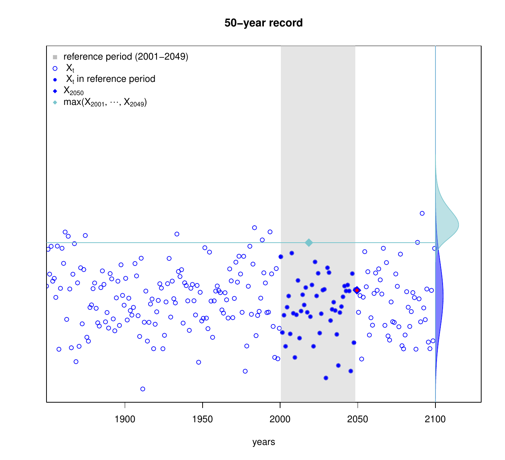

Using climate simulations for (extreme) weather event attribution
Soulivanh Thao (LSCE), Philippe Naveau (LSCE),
Paula Gonzalez (LSCE), Julien Worms (UVSQ),
Aurelien Ribes (CNRM), Julien Cattiaux (CNRM)
World Weather Attribution: Pacific Northwest 2021 heatwave

"such as an event is still rare or extremely rare (a 1 in 1000 year event) in today's climate, yet would be virtually impossible without human-caused climate change."
"daily maximum temperatures (TXx) in the heatwave region, as rare as 1 in a 1000 years would have been at least 150 times rarer without human-induced climate change."
"this heatwave was about 2°C hotter than it would have been if it had occurred at the beginning of the industrial revolution (when global mean temperatures were 1.2°C cooler than today)."
Attribution of climate change
Attribution
The process of evaluating the relative contributions of multiple causal factors to a change or event with an assignment of statistical confidence.
Consequences
Need to assess whether the observed changes are
- consistent with the expected responses to external forcings (PS)
- inconsistent with alternative explanations (PN)
Source:
IPCC AR5, Chapter 10.
Attribution and causality
Assessing the causal effect of human activity through the notion of intervention and counterfactuals

Source:
Hannart, A., J. Pearl, F.E. Otto, P. Naveau, and M. Ghil, 2016: Causal Counterfactual Theory for the Attribution of Weather and Climate-Related Events. Bull. Amer. Meteor. Soc., 97, 99–110, https://doi.org/10.1175/BAMS-D-14-00034.1
Importance of climate models in D&A
Counterfactual
can never be observed in practice.
Intervention
requires to have an experimental group and a control group, which is not possible with only one Earth.
Solution ?
Use climate models to perform controlled experiements.
CMIP ? and projections
But we still need observations and statistical models
- To check wether climate models are consistents with observations
- To link climate models and observations
- To infer quantities of interest
Attribution of Global Mean Surface Temperature Trends

Source:
IPCC AR5, FAQ 10.1, Figure 1 |
Statistical Model
$$ \begin{array}{ll} Z^* = \mu + \sum_{i = n}^N \beta_i R_i^* \\ Z = Z^* + \varepsilon_Z \\ R_i = R_i^* + \varepsilon_{R_i} \quad \text{for } i = 1, ..., N.\\ \end{array} $$$Z$ is the climate state observed at a given time, which is therefore impacted by climate internal variability $\varepsilon_Z$.
$R_i$ is a response to forcing $i$ simulated by a climate model. It includes the contribution of the internal variability $\varepsilon_{R_i}$ simulated by the climate model.
Attribution of Extreme Events
Defining the event (only univariate)
- Define the climate variable of interest.
e.g. temperature, precipitation, ... - Define the spatio-temporal aggregation.
e.g. maximum over Europe of 10-day temperature averages - Define the conditioning.
e.g. only during JJA, only for NAO+ circulation type, ... - Define the threshold
More on this:
Cattiaux, J. and A. Ribes, 2018: Defining Single Extreme Weather Events in a Climate Perspective. Bull. Amer. Meteor. Soc., 99, 1557–1568, https://doi.org/10.1175/BAMS-D-17-0281.1
Case study: 2019 July Heatwave in France (Robin et Ribes al. 2020)
Event definition:
Annual maxima of 3-day average temperature anomalies in France, i.e. [42N - 51N] x [5W -10E] above +4.98 Kp
More on this:
Robin, Yoann ; Drouin, Agathe ; Soubeyroux, Jean-Michel ; Ribes, Aurélien ; Vautard, Robert. Comment attribuer une canicule au changement climatique ?. La Météorologie, 115, 28-36, 2021.
Data
Simulations from 26 models from the Coupled Model Intercomparison Project 5 (CMIP5).
Data are extracted for the experiences:
- historical, corresponding to the climate in the factual world (1850-2005)
- rcp8.5, corresponding to climate projections for the future of the factual world(2006-2100)
Météo-France thermal index is used as observation. It corresponhs to the average of observations from 30 ground stations, showing data available between 1947 and 2019

Bayesian Models
Factual World
$$\begin{aligned} Z_t &\sim GEV(\mu_0 + \mu_1 C^{F}_t, exp(\sigma_0 + \sigma_1 C^{F}_t), \xi) \\ C^{F}_t &= C^{NAT}_t + C^{ANT}_t + \epsilon_{IV} \\ \epsilon_{IV} &\sim \mathcal{N}(0, \sigma_{IV}^2) \end{aligned}$$
Counterfactual World
$$\begin{aligned} X_t &\sim GEV(\mu_0 + \mu_1 C^{CF}_t, exp(\sigma_0 + \sigma_1 C^{CF}_t), \xi) \\ C^{CF}_t &= C^{NAT}_t + \epsilon_{IV} \\ \epsilon_{IV} &\sim \mathcal{N}(0, \sigma_{IV}^2) \end{aligned}$$
Prior distribution
$$\begin{aligned} \theta &= [\mu_0, \mu_1, \sigma_0, \sigma_1, \xi, C^{NAT}, C^{ANT}] \\ &\sim \mathcal{N}(\mu_\theta, \sigma_\theta^2) \end{aligned}$$
We use the distribution of the CMIP5 model as prior
Generalized Extreme Value distribution
The model focuses on the statistical behavior of $$M_n = max\{X_1 , ... , X_n\},$$ where $X_l, ... , X_n$, is a sequence of independent random variables having a common distribution function $F$
Theorem
If there exist sequences of constants $\{a_n > 0\}$ and $\{b_n\}$ such that
$$ \mathbb{P}\{(M_n - b_n)/a_n \leq z \} \rightarrow G(z) \text{ as } n \rightarrow \infty $$
for a non-degenerate distribution function $G$, then $G$ is a member of the GEV family
$$ G(z) = \exp\left\{-\left[1 + \xi \left(\frac{z - \mu}{\sigma}\right)\right]^{-1/\xi}\right\},$$
defined on $\{z : 1 + \xi (z - \mu) / \sigma \geq 0\}$, where $-\infty < \mu < \infty$, $\sigma > 0$ and
$-\infty < \xi < \infty$ $\Box$
In practice , we use the fact that under the theorem asumption $$ \mathbb{P}\{M_n \leq z \} \approx G\{ (z - b_n)/a_n \} = G^*(z),$$ where $G^*$ is another member of the GEV family.
GEV fits

Global Mean Surface Temperature as covariate
Posterior: change in probability
Posterior: change in intensity
Let's take a few steps back
Event attribution is about comparing two distributions
- Counterfactual $$ \mbox{ Sample $\bf X$} \mbox{ with } {\color{green} G}(x)=\mathbb{P}(X \leq x) %\mbox{ \& }{\color{green} p_0}(u)=\mathbb{P}(X >u ) $$
- Factual $$ \mbox{ Sample $\bf Z$} \mbox{ with } {\color{purple} F}(z)=\mathbb{P}(Z \leq z) %\mbox{ \& }{\color{purple} p_1}(u)=\mathbb{P}(Z >u ) $$
Hard to do with observations...
- We never observe $\bf X$ for the counterfactual climate
- Often lack of available data $\bf Z$ for the factual climate
... and models have biases...
- Counterfactual world from model $m$ $$ \mbox{ Sample $\bf X^{(m)}$} \mbox{ with } {\color{green} G}^{(m)}(x)=\mathbb{P}(X^{(m)} \leq x) % \mbox{ \& }{\color{green} p_0}(u)=\mathbb{P}(X >u ) $$
- Factual world from model $m$ $$ \mbox{ Sample $\bf Z^{(m)}$} \mbox{ with } {\color{purple} F}^{(m)}(z)=\mathbb{P}(Z^{(m)} \leq z) %\mbox{ \& }{\color{purple} p_1}(u)=\mathbb{P}(Z >u )$$
Statistical bias correction
Linking factual and counterfactual truth with their numerical approximations
$$ X \overset{d}{=} \left( G^{\leftarrow} \circ G^{(m)} \right) \left( X^{(m)} \right) $$ and $$ Z \overset{d}{=} \left( F^{\leftarrow} \circ F^{(m)} \right)\left( Z^{(m)} \right) $$ where $G^{\leftarrow}(.)$ the inverse of $G$, i.e. the quantile function. All variables are assumed to be continuous.
A fundamental condition in D&A
$$ A: \;\; F^{\leftarrow} \circ F^{(m)} = G^{\leftarrow} \circ G^{(m)}% \mbox{ for all $m=1, \dots, M.$} $$
Climatological interpretation
Climatological interpretation
The discrepancy between numerical model $m$ and the true world stays the same in the factual and counterfactual worlds.
Mathematical consequence of $H_0$
Under $A$, it is possible to easily make relative comparisons of probabilities
Change of lenses: relative comparison of probabilities
Instead of studying exceedance probabilities like $$ \color{green}{p_0(t)} = \mathbb{P}(X_t > u ) \; \text{ and } \; \color{purple}{p_1(t)}=\mathbb{P}(Z_t > u ),$$ we will estimate and interpret record probabilities like $$ \color{green}{p_{0,r}(t)} = \mathbb{P}(X_t > \max(X_{t-1}, X_{t-2}, \dots, X_{t-r+1})) $$ and $$\color{purple} {p_{1,r}(t)} = \mathbb{P}(Z_t > \max(X_{t-1}, X_{t-2}, \dots, X_{t-r+1})) $$ where the usual threshold $u$ has been replaced by $ \max(X_{t-1}, X_{t-2}, \dots, X_{t-r+1})$.
Records in the counterfactual world: $\color{green}{p_0,r}(t) = \mathbb{P}(X_t > \max(X_{t-1}, \dots, X_{t-r+1})) $
Records in the counterfactual world:: $\color{green}{p_0,r}(t) = \mathbb{P}(X_t > \max(X_{t-1}, \dots, X_{t-r+1})) $

Exchangeable random sequences
$$\mathbb{P}( X_t > \max(X_{t-1}, X_{t-2}, \dots, X_{t-r+1})) = \frac{1}{r}$$
- No need to view data to compute this probability of record: universal yardstick
- This equality is relative and does not depend on the marginal type: {\it bypassing bias-correction}
Can a factual realizations be a record in the counterfactual world? $\color{green}{p_1,r}(t) = \mathbb{P}(Z_t > \max(X_{t-1}, \dots, X_{t-r+1}))$

Under exchangeability of $X_t$ and if Model $m$ satisfies condition $A$
$$ \color{darkgreen} {p_{1,r}(t)} = \color{darkgreen} {p_{1,r}(t)}^{(m)} $$ Indeed, $$ \begin{aligned} \color{darkgreen} {p_{1,r}(t)}^{(m)} & = \mathbb{P}(Z_t^{(m)} > \max(X_{t-1}^{(m)}, \dots, X_{t-r+1}^{(m)})) \\ & = \mathbb{P}(Z_t^{(m)} > X_{t-1}^{(m)}, \dots, Z_t^{(m)} > X_{t-r+1}^{(m)}) \\ & = \mathbb{P}\left(G^{\leftarrow} \circ G^{(m)}(Z_t^{(m)}) > G^{\leftarrow} \circ G^{(m)}(X_{t-1}^{(m)}), \dots, G^{\leftarrow} \circ G^{(m)}(Z_t^{(m)}) > G^{\leftarrow} \circ G^{(m)}(X_{t-r+1}^{(m)}) \right)\\ & \stackrel{A}{=}\mathbb{P}\left(F^{\leftarrow} \circ F^{(m)}(Z_t^{(m)}) > G^{\leftarrow} \circ G^{(m)}(X_{t-1}^{(m)}), \dots, F^{\leftarrow} \circ F^{(m)}(Z_t^{(m)}) > G^{\leftarrow} \circ G^{(m)}(X_{t-r+1}^{(m)}) \right)\\ & = \mathbb{P}(Z_t > X_{t-1}, \dots, Z_t > X_{t-r+1}) \\ & = \mathbb{P}(Z_t > \max(X_{t-1}, \dots, X_{t-r+1})) = \color{darkgreen} {p_{1,r}(t)} \end{aligned} $$Under $A$, there is no need to correct Model $m$. Huge gain!!!
Distribution of $W= - \log {G}(Z)$ when $G$ describes annual maxima and $Z$ too?
If $X \sim GEV(\mu_X,\sigma_X, \xi_X)$ and $Z \sim GEV(\mu_Z,\sigma_Z, \xi_Z)$ , then $$ W \sim \mbox{Weibull}(k,\lambda) \mbox{ with } k=\xi_X/\xi_Z \mbox{ and } \lambda= \left( k\times \sigma_Z/\sigma_X \right)^{-1/\xi_X}, % & \mbox{, if $\xi_X \xi_Z > 0$.} $$
Estimation algorithm of ${\color{darkgreen} {p_{1,r}(t)}}$
Under Weibull assumption, $p_{1,r}(t)=\int_0^1\exp(-(r-1)\color{purple}{\lambda_t}(-\log x)^{1/\color{purple}{k_t}})\,dx$
Estimation algorithm:
- Step 1: $\forall \,t$, $$ \widehat{p_{1,2}}(t)=\sum_{j=1}^n \frac{K_h(t-t_k)}{\sum_{k=1}^n K_h(t-t_k)}\mathbb{G}(Z_{t_j}) \qquad \widehat{p_{1,3}}(t)=\sum_{j=1}^n \frac{K_h(t-t_k)}{\sum_{k=1}^n K_h(t-t_k)}\mathbb{G}^{2}(Z_{t_j})$$
- Step 2: for a chosen $t$, $$\begin{equation*} \left\lbrace \begin{array}{l} \widehat{p_{1,2}}(t)=\int_0^1\exp(-\color{purple}{\hat{\lambda}_t}(-\log x)^{1/\color{purple}{\hat{k}_t}})\,dx\\ \widehat{p_{1,3}}(t)=\int_0^1\exp(-2\color{purple}{\hat{\lambda}_t}(-\log x)^{1/\color{purple}{\hat{k}_t}})\,dx\,. \end{array} \right.\rightsquigarrow (\color{purple}{\hat{k}_t},\color{purple}{\hat{\lambda}_t})\end{equation*}$$
- Step 3:$\qquad$ $\widehat{p_{1,r}}(t)\leftarrow\int_0^1\exp(-(r-1)\color{purple}{\hat{\lambda}_t}(-\log x)^{1/\color{purple}{\hat{k}_t}})\,dx$\\
Practical facts
- GEV distributions are never fitted in this study
- The Weibull goodness of fit can be checked
- We don't need to observe a record to compute a record probability
- Extrapolation can be done, i.e. take $r$ larger than the sample size
Yearly maxima of daily precipitation at Richmond grid-point (IPSL, rcp8.5)
Yearly maxima of daily precipitation from climate model IPSL (worse scenario)

How to check $A$
If we assume that there is a period of time, $T$, when the factual climate is like the counterfactual climate , i.e. $$ F_t \overset{d}{=} G \; \text{for} \; t \in T $$ then, for the period $T$, it implies that under $A$ $$ F^{\leftarrow} \circ F^{(m)} = G^{\leftarrow} \circ G^{(m)} \implies F^{\leftarrow} \circ F^{(m)} = F^{\leftarrow} \circ G^{(m)} \\ \color{red}{\implies F^{(m)} = G^{(m)}} $$ and that $$ \color{red}{p_{1,t}^{(m)} = 1/2 \; \text{for} \; t \in T} $$
Test for equality of distribution between samples $\{X_t^{(m)}: t \in T\}$ and $\{Z_t^{(m)}: t \in T\}$.
Limits
- Only univariate yearly time-series
- Not usable for impact models
Inference of $\color{purple} {p_1}^{(m)}$
We assume that:
- the counterfactual climate is stationnary, i.e. $X_t \sim G$
- the factual climate is non-stationnary, i.e. $Z_t \sim F_t$
So time indexing is needed for $$\color{purple}{p_{1,t}}^{(m)} = \mathbb{P}(Z_t^{(m)} > X_t^{(m)})$$
Inference of $\color{purple} {p_1}^{(m)}$
As $\color{purle}{p_{1,t}} = \mathbb{E}\left[ G (Z_t) \right]$ is an expectation, the Nadaraya-Watson estimator can be defined $$ \color{purple} {\hat{p}_{1,t}}^{(m)} = \frac{1}{\sum K(t-t_j)} \sum_{j=1}^J K(t-t_j) \, \mathbb{G}^{(m)}\left(Z^{(m)}_{t_j}\right) $$ where $K$ is a weighting Kernel and $\mathbb{G}^{(m)}$ is the empirical cdf from $X_{1:t}^{(m)}$
Coupling statistical properties of $\frac{1}{\sum K(t-t_j)} \sum_{j=1}^J K(t-t_j) \, {\color{red} G}^{(m)}\left(Z^{(m)}_{t_j}\right)$, see e.g. Hardle (1991), and empirical process results , see e.g. Mason and Van Zwet (1987), provide asymptotic confidence intervals when ${\color{red} G}^{(m)}$ is replaced by $\mathbb{G}^{(m)}$
Sources:
Härdle,W. (1991) Smoothing Techniques: With Implementation in S. Springer Series in Statistics. NewYork: Springer-Verlag.
Mason, D. M., and W. R. Van Zwet, 1987: A refinement of the KMT inequality for the uniform empirical process. Ann. Probab., 15, 871884, https://doi.org/10.1214/aop/1176992070.
Case study: 2003 European Heatwave
How to judge all the $\color{darkgreen} {\hat{p}_{1,t}}^{(m)}$ ?
If we assume that there is a period of time, $T$, when the factual climate is like the counterfactual climate , i.e. $$ F_t \overset{d}{=} G \; \text{for} \; t \in T $$ then, for the period $T$, it implies that under $H_0$ $$ F^{\leftarrow} \circ F^{(m)} = G^{\leftarrow} \circ G^{(m)} \implies F^{\leftarrow} \circ F^{(m)} = F^{\leftarrow} \circ G^{(m)} \\ \color{red}{\implies F^{(m)} = G^{(m)}} $$ and that $$ \color{red}{p_{1,t}^{(m)} = 1/2 \; \text{for} \; t \in T} $$
Test for equality of distribution between samples $\{X_t^{(m)}: t \in T\}$ and $\{Z_t^{(m)}: t \in T\}$.
Here, we choose a period, $T=\{1850:1900\}$, corresponing to the pre-industrial period and we use the Anderson-Darling two-sample test. We filter out models whose p-value is lower than $0.2$
QQ-plot and Anderson-Darling test
Averaging climate model contribution
$$ \color{purple}{\hat{p}_{1,t}}^{(.)}= \sum_{m=1}^{M} w_m \times \color{purple}{\hat{p}_{1,t}}^{(m)} $$ where we chose $w_m$ so that $\color{purple}{\hat{p}_{1,t}}^{(.)}$ is the closest possible to $1/2$ in the period, $T=\{1850:1900\}$
Note the total variance is approximated by $$ \sum_{m=1}^{M} w^2_m \times \left( \hat{\sigma}^2_t + ( \hat{\sigma}^{(m)}_t)^2 \right) $$ with $$ \hat{\sigma}^2_t = \dfrac{1}{M} \sum_{m = 1}^{M} \big(\color{purple}{\hat{p}_{1,t}}^{(m)} - \color{purple}{\hat{p}_{1,t}}^{(.)}\big)^2 $$
Multimodel vs Observations
Conclusion
- Uncertainties in observations and climate models: using only one source of data may not give robust results.
- (Unverifiable) assumptions are required to make causal statements. In our case:
- $H_0: \;\; F^{\leftarrow} \circ F^{(m)} = G^{\leftarrow} \circ G^{(m)}$
- there is a period of time, $T$, when the factual climate is like the counterfactual climate
- Defining the event in a certain way can simplify the process of synthezing the results provided by different sources.